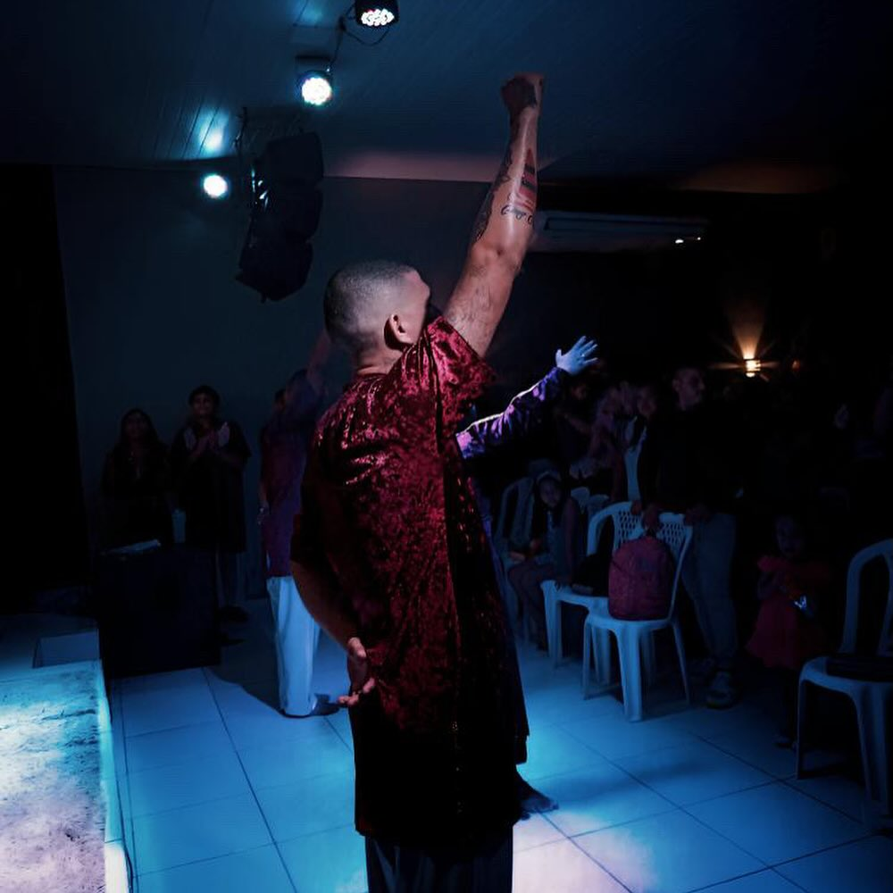

Estamos muito felizes em compartilhar com vocês uma novidade abençoada. Estamos iniciando o projeto de construção do nosso novo templo, um espaço de fé, amor e união para todos. Este templo não será apenas um edifício, mas um lar espiritual onde poderemos nos reunir para adorar, orar e celebrar juntos.
Para que este sonho se torne realidade, precisamos da sua ajuda. Convidamos você a fazer parte desta obra divina através de uma doação. Toda contribuição é fundamental e nos aproxima ainda mais deste objetivo abençoado.
Cada doação, independentemente do valor, é um ato de fé e generosidade que contribuirá para a construção do nosso novo lar espiritual. Sabemos que juntos, com a graça de Deus, conseguiremos erguer este templo que servirá de luz e esperança para muitos.
Gostaríamos de esclarecer que todos que doarem terão suas contribuições e os gastos detalhados divulgados em nossas mídias, para total transparência.
Agradecemos imensamente por sua colaboração e confiança.
As doações podem ser feitas de forma simples e rápida via PIX, utilizando a chave abaixo:
Chave PIX : 0 8 .3 4 1 .7 1 6 / 0 0 0 4 - 0 7 (Ministério Internacional Apostólico Shabath)
Deus abençoe grandemente a sua vida e sua família. Com gratidão, agradecemos de coração por seu apoio e por fazer parte desta jornada de fé.
Pastor: Carlos Eduardo / Pastora: Natalia Melo
MIASH NORTE - Ministério Internacional Apostólico Shabath. Muito obrigado e fiquem com Deus!
Texto: Bíblico/ Hebreus 11:1 – “Ora, a fé é a certeza daquilo que esperamos e a prova das coisas que não vemos.”
Venha você também fazer parte dessa visão.
Sobre a visão celular no modelo dos 12
Ganhar
Este pilar refere-se ao processo de evangelização, onde o objetivo é levar novas pessoas a conhecer Jesus Cristo e aceitá-lo como seu salvador. É a fase inicial do discipulado, onde o foco está em alcançar aqueles que ainda não têm um relacionamento com Deus.
Consolidar
Após ganhar novos convertidos, é crucial consolidar a sua fé. Isso envolve o acompanhamento inicial, ensinando os princípios básicos da fé cristã e ajudando-os a fortalecer o seu compromisso com Deus. O objetivo é assegurar que os novos crentes estejam firmemente enraizados na sua fé.
Discipular
Esta etapa envolve um treinamento mais profundo, onde os novos crentes são educados nos ensinamentos da Bíblia e nas práticas cristãs. O discipulado é um processo contínuo de crescimento espiritual e desenvolvimento pessoal, preparando os crentes para se tornarem líderes que possam, por sua vez, discipular outros.
Enviar
O último pilar é enviar os discípulos para que eles possam replicar o processo, evangelizando, consolidando, discipulando e enviando novos crentes. Este é o ciclo que garante a multiplicação de líderes e a expansão contínua do ministério.
Fotos Membros e Eventos




- 09h00 | Culto dos Estrangeiros
- 17h00 | Culto da Família
- 19h30 | Culto do Discipulado
- 19h30 | Célula nas Casas
- 19h30 | 1ª Semana, Rede de Mulheres
- 19h30 | 2ª Semana, Rede de Homens
- 19h30 | 4ª Semana, Rede de Casais
- 12h00 | Clamor do Meio Dia
- 16h00 | Rede Kids
- 19h30 | Shabadaço( Rede de Jovens)
- Encontro com Deus
- Festas Bíblicas:
- Festa de Purim;
- Festa da Páscoa;
- Festa Pentecostes
- Festa das Trombetas
- Festa dos Tabernáculos
- Festa de Hanukka
- Honra
- Casais
- Intercessão
- Cura Interior
- Consolidação
- Filho Volta.
-